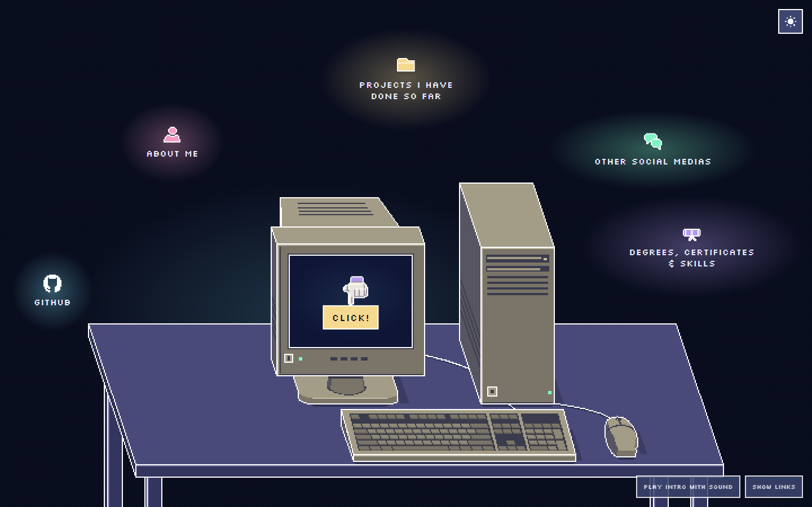
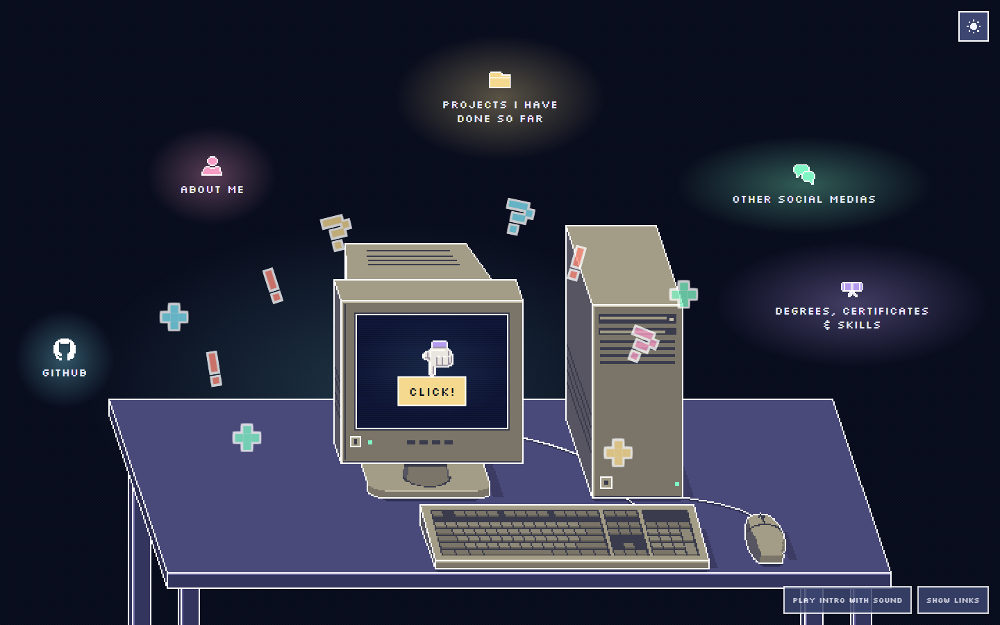

What changed, what was measured, and the limits · Open local preview · Previous pass
Captures from the working site. The cycle is 4600ms: contact at 460ms, the key held down for 2000ms, a 300ms fade as the glove lifts, then dark. Frames are parked at the named beats; the three "live hold" shots were taken 700ms into the hold of three consecutive live cycles.
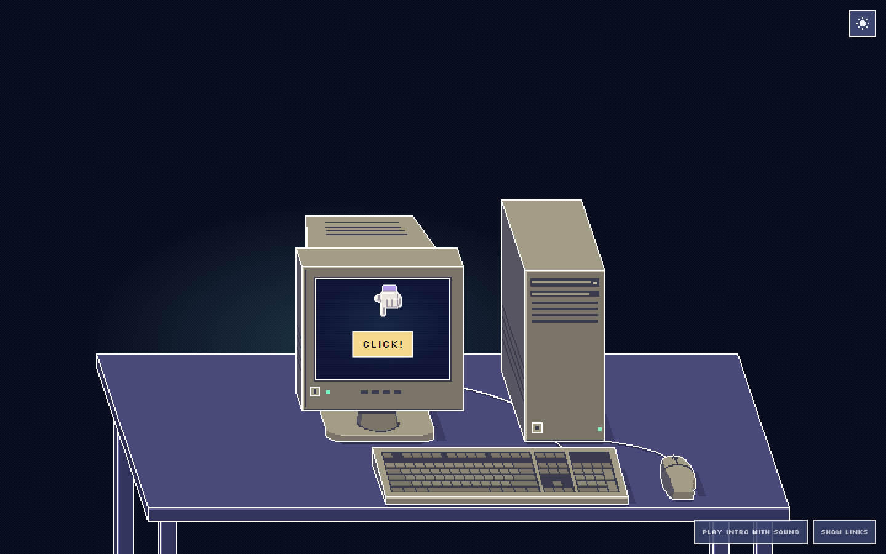
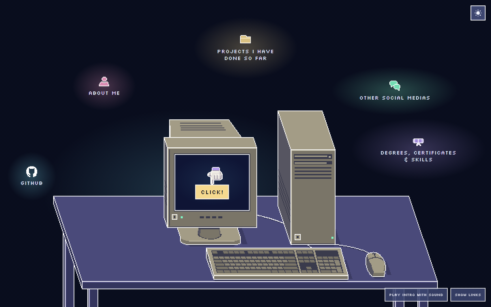
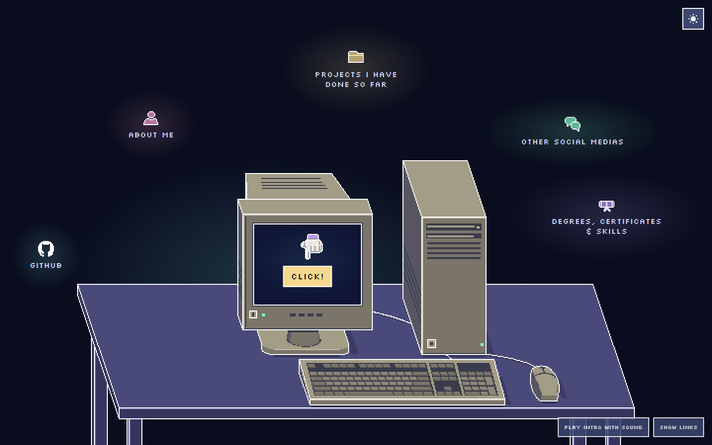
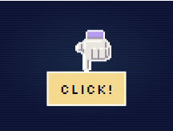
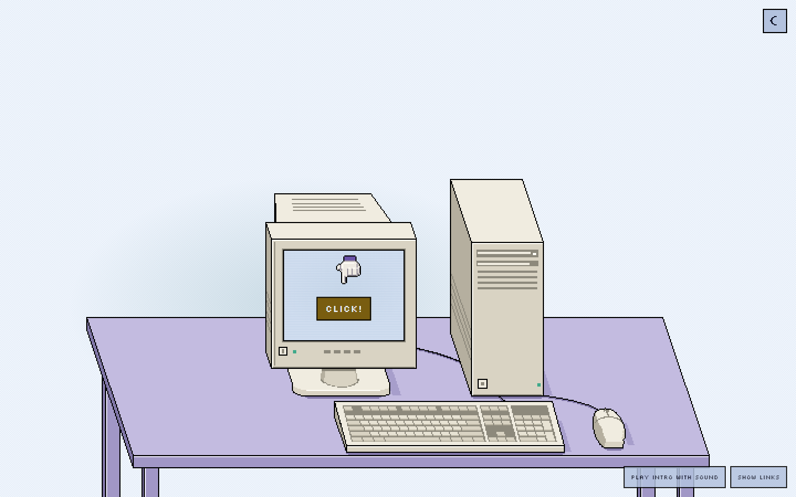
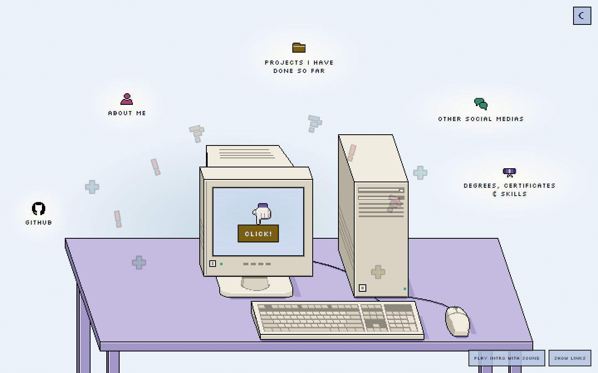
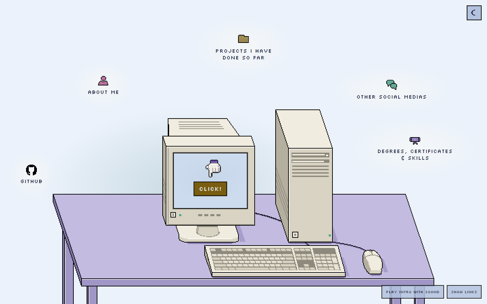


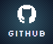
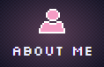
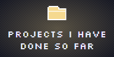
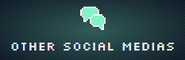
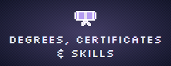
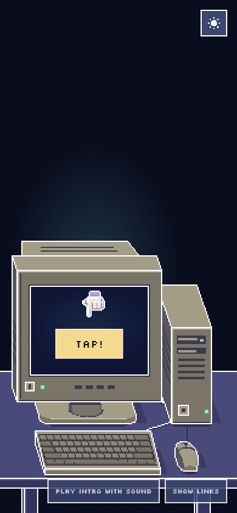
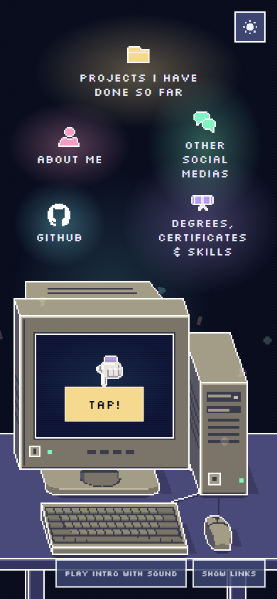
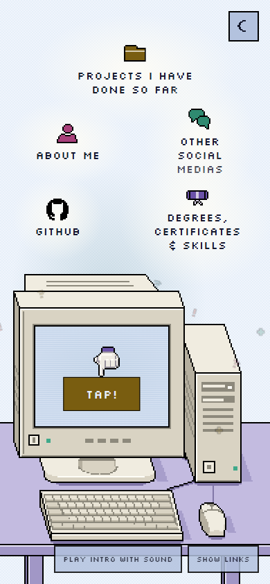
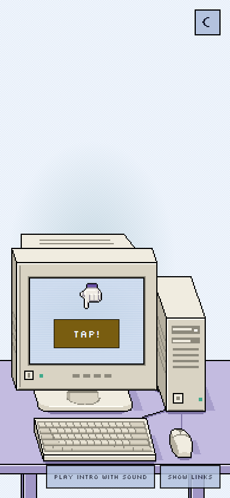
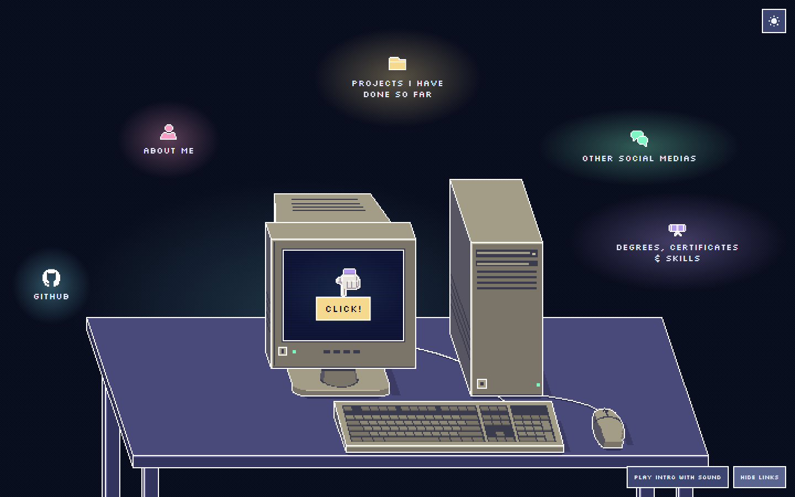
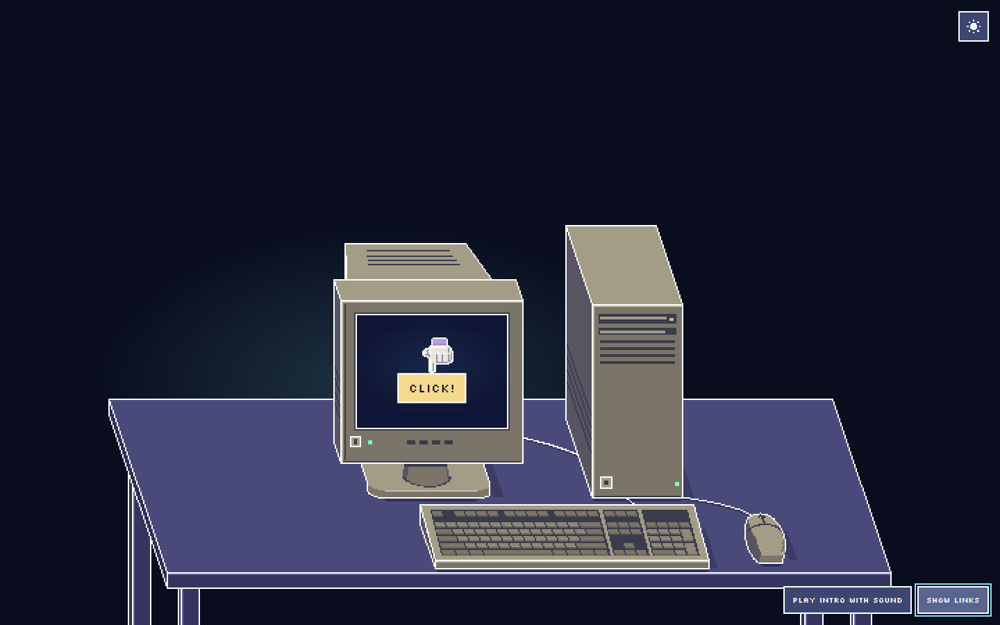
Local review evidence only. Work is not deployed.